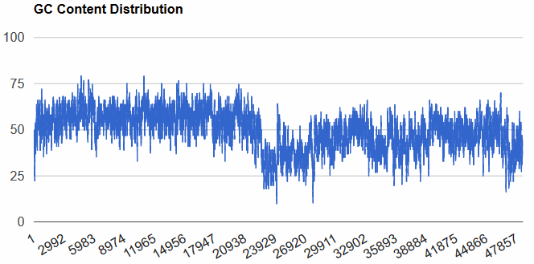

Composition

A good internet resource on GC content can be found on the bionity.com website.
- VecScreen (National Center for Biotechnology Information) - screens your DNA sequence for potential vector sequence. Well worth running before doing any other analysis.
- Base composition - consider WORDCOUNT (EMBOSS Suite) which gives one the option of choosing the "word size". The latter provides a nice output of mono-, di- and trinucleotide frequencies. Select "create statistics" and "start task" to get to the sequence entry page.
- Oligonucleotide frequencies calculator - in addition to calculating the number and frequency of monomeric to octomeric sequences this site also will calculate Zero Order Markov chain for tetranucleotides (ZOM); First Order Markov chain for tetranucleotides (FOM); Second Order Markov chain for tetranucleotides (SOM); and, Z-scores for tetranucleotides.
- Compare oligonucleotide frequencies among sequences - This tool will compute distance between input sequences and UPGMA clustering will be display in tabular and dendogram formats.
- DNASCANNER v2 - offers an extensive analysis of 158 DNA properties, including mono/di/trinucleotide frequencies, structural, physicochemical, thermodynamics, and mechanical properties of DNA sequences. The tool provides downloadable results and offers interactive plots for easy interpretation and comparison between different features.
(Reference: Preeti P et al. 2024. J Comput Biol 31(7): 651-669). - Genomics %G~C Content Calculator (Science Buddies.org) - simple calculator for mol%G+C plus counts the individual bases.
- Compositional heterogeneity: GC Content Plot Online. Similar site here.
- GraphDNA - DNA Skew Graphing (Viral Bioinformatics Resource Center, University of Victoria, Canada) - this Java applet performs DNA walks, purine, AT and GC skews on small (<1 Mb) genomes. Requires registration and login. Alternative locations for cumulative GC skew are the GC Skewing (Davidson College, U.S.A.). Genomic nucleotide skews are explained here.
- GC Content Calculator (Biologics International Corp, Indianapolis, USA) - DNA GC-content percentage is calculated as Count(G + C)/Count(A + T + G + C) * 100. This program was used to generate the following disgram of Escherichia phage lambda (NC_001416) using a window of 48 bp. One can click on the peaks and valleys and get a read-out of the localized GC-content. Another graphically good site is on the VectorBuilder site.
- JaMBW (European Molecular Biology Laboratory of Heidelberg, Germany). Java based Molecular Biologist's Workbench.Select Chapter 1 for sequence format conversion (upper <-> lower case; T <-> U; reverse or complement sequence). N.B. Also check out Chapter 5 "Buffer Calculator."
- Random DNA sequence generator
(Reference: Villesen, P. 2007. Molecular Ecology Notes 7: 965–968.).
Similar resources are available here and here. - GenRGenS, a software dedicated to random generation of genomics sequences that supports several classes of models, including Markov chains, HMM, context-freegrammars, PROSITE patterns and more.
(Reference: Y. Ponty et al. Bioinformatics, 22:1534-1535).

Updated: December, 2025